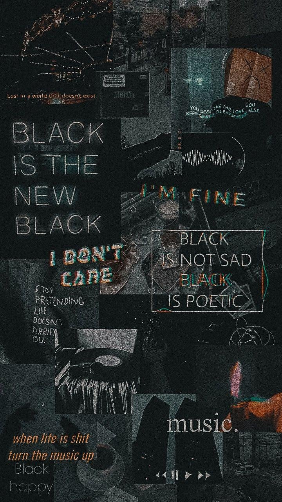

|
Gambar Topan |
Klik bagian tertentu pada gambar:

MALANG, KOMPAS — Teknologi baru akan menjadi penentu abad ke-21. Fondasinya sudah diletakkan selama 25 tahun terakhir. Namun, teknologi berkembang begitu cepat sehingga menuntut kita memiliki pengetahuan cukup agar bisa terhindar dari dampak buruk yang ditimbulkannya. Wakil Menteri Komunikasi dan Digital Nezar Patria menyampaikan hal itu saat berbicara pada Reuni dan Seminar ”Oase Gelap Terang Indonesia” yang digelar oleh Forum Alumni Aktivis Perhimpunan Pers Mahasiswa Indonesia (FAAPPMI) di Auditorium Universitas Brawijaya Malang, Jawa Timur, Sabtu (25/10/2025). Nezar mengkaji dari sisi terang soal teknologi komunikasi.
”Seperempat abad ini adalah abad teknologi baru di mana kecepatan perkembangannya dahsyat. Setahun lalu kita dikejutkan oleh AI (kecerdasan buatan) generatif, ChatGPT. (Saat itu) Kemampuannya belum sehebat sekarang, (tetapi) itu saja sudah memukau. Apalagi saat ini, kemampuan AI luar biasa,” ujarnya. Pakar hukum tata negara Bivitri Susanti dan aktivis sosial Inayah Wahid hadir sebagai pembicara lainnya dalam acara itu. Rektor Universitas Brawijaya Widodo turut hadir dan memberikan sambutan. Menurut Nezar, tingkat adopsi masyarakat terhadap teknologi sangat tinggi karena beragam platform digital kian mudah diakses. Kini, AI bisa ditemukan di beberapa aplikasi ponsel. Bahkan, masyarakat perdesaan dapat memanfaatkannya melalui Whatsapp (WA). Indonesia pun tercatat sebagai pengguna WA terbesar kedua di dunia.